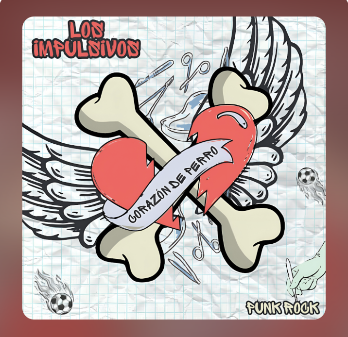

SABIA Editores × Gatito Records
Corazón de Perro
Los Impulsivos
Los Impulsivos presentan Corazón de Perro punk rock al más puro estílo DIY
Escuchar
01. El ángel de la guarda
02. Corazón de perro
03. Deportivo Aragón
04. Me ha sangrado la nariz
05. La punk
06. Sin ti mamá
Sobre este lanzamiento
Punk rock desde San Juan de Aragón CDMX.
Esta edición forma parte de la colaboración entre SABIA Editores y Gatito Records para acercar proyectos musicales independientes a nuevos públicos.
Créditos
Batería: Atzín Rejón
Bajo y coros: Luis RS
Guitarra y voz: Alberto Rejón
Productor: Roy Ro
Grabado en el Cauce Estudio
Lanzamiento original: 30/06/24
Formatos disponibles
- Digital
- Descarga mediante esquema paga lo que quieras.
- CD
- Edición física disponible.
- Vinil
- Disponible próximamente.